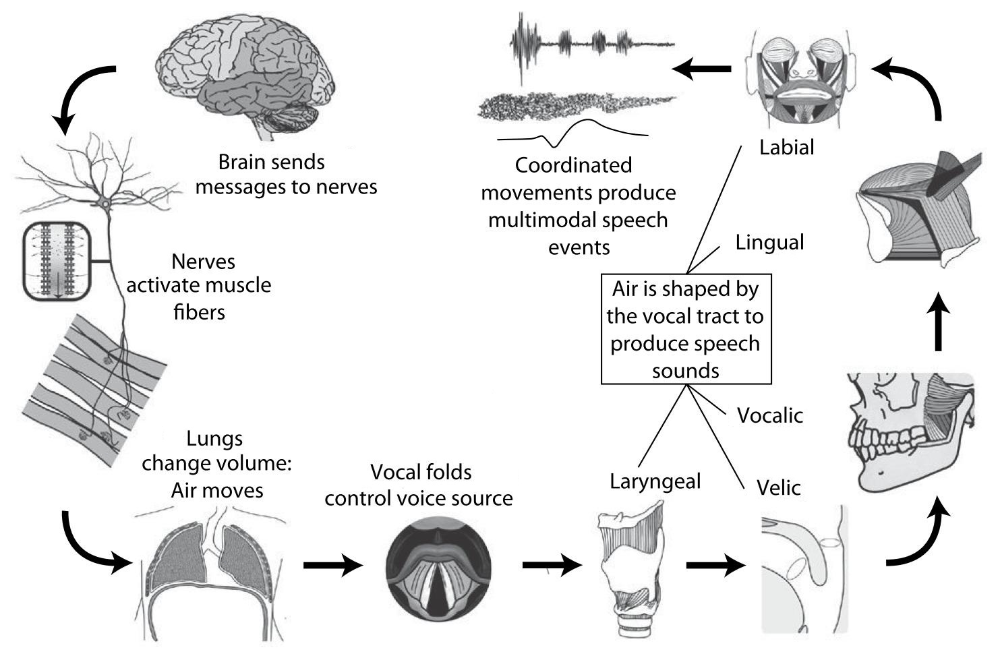
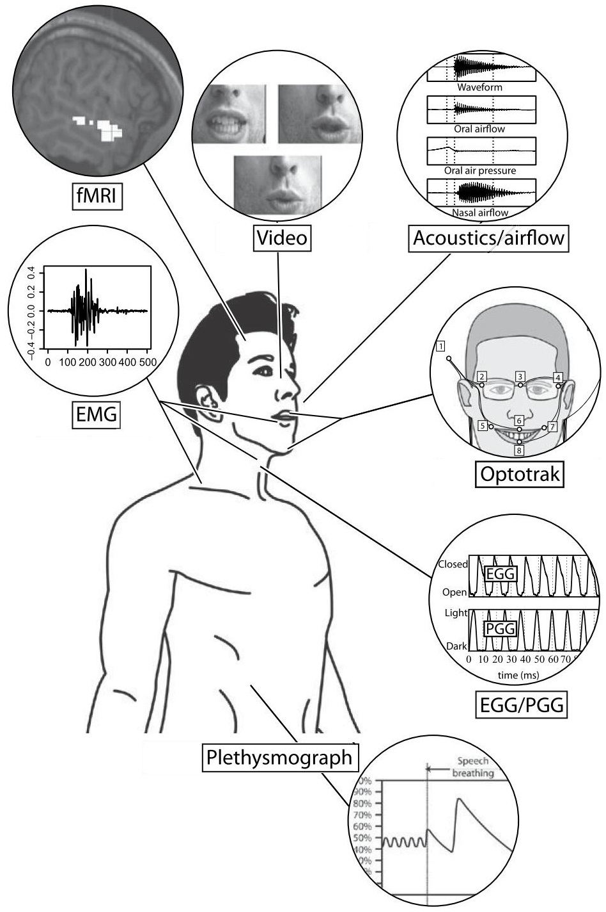
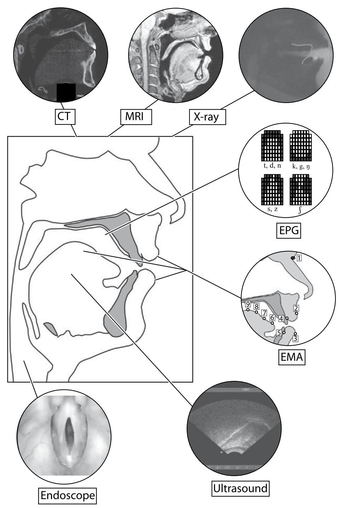
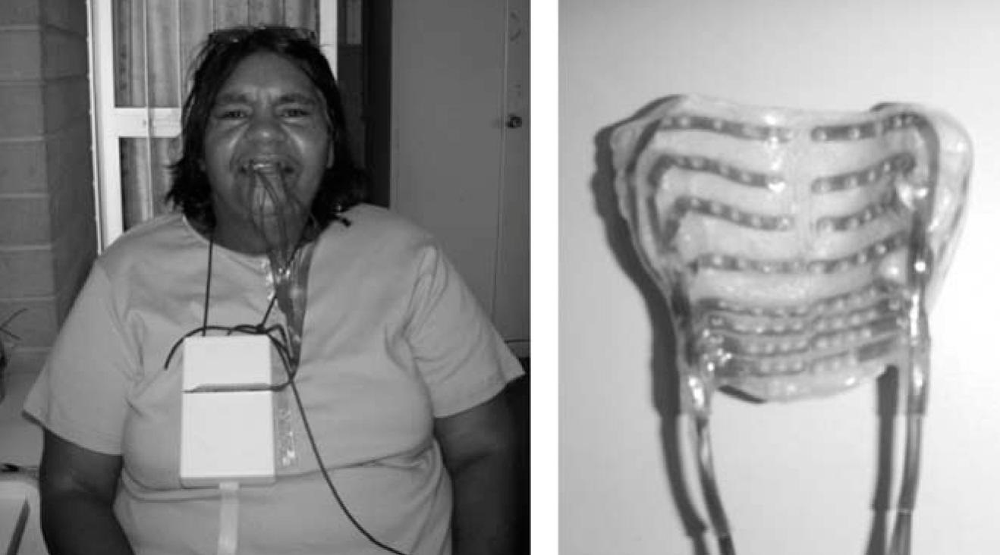
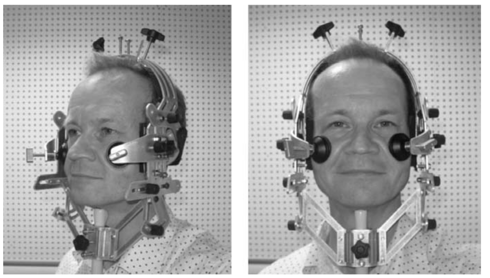
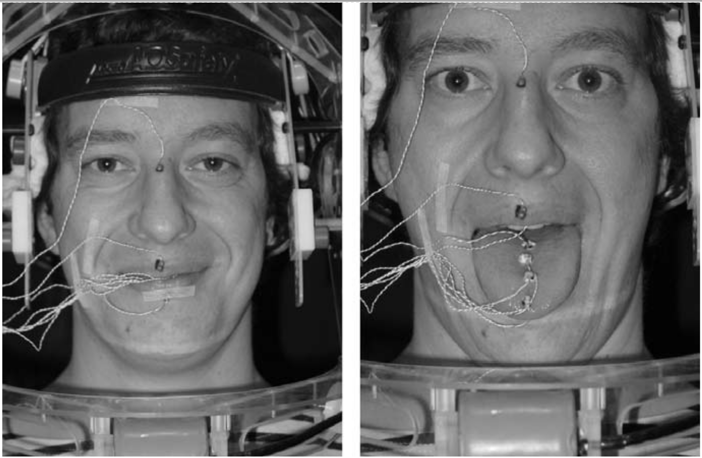
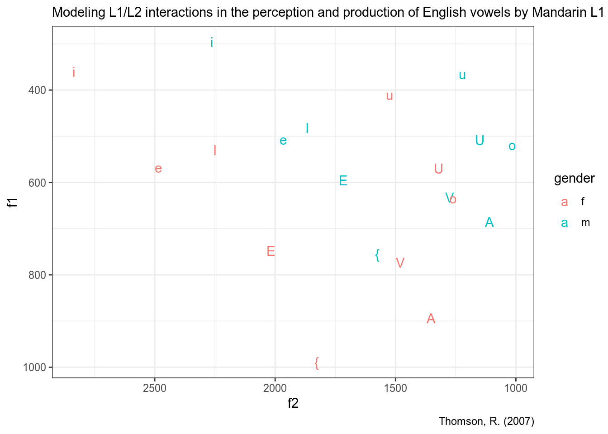
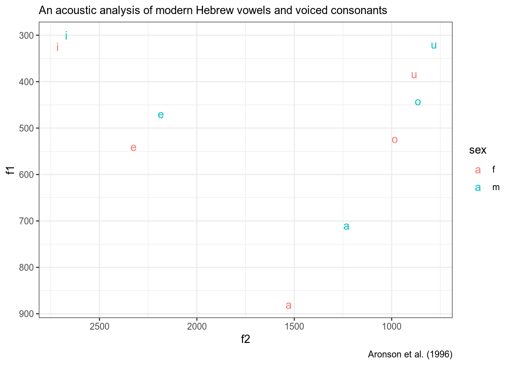

# set your working directory ----------------------------------------------
setwd("...")
# read all files in the derictory to R ------------------------------------
myfiles <- lapply(list.files(), read.delim)
# merge files into one dataframe ------------------------------------------
result_df <- Reduce(rbind, myfiles)
# create labels -----------------------------------------------------------
sounds <- c("l", "sh", "s", "x", "X")
result_df$label <- rep(sounds, sapply(myfiles, nrow))
# draw the plot -----------------------------------------------------------
library(ggplot2)
ggplot(data = result_df,
aes(x = freq.Hz.,
y = pow.dB.Hz.,
color = label))+
geom_line(size = 2)+
theme_bw()+
labs(title = "Smoothed LPC for different fricatives",
x = "frequency (Hz)",
y = "power (Db/Hz)")   
 
vowelsПакет для разных типов нормализации гласных: http://lingtools.uoregon.edu/norm/
phonToolsМного разных датасетов с гласными.
library(phonTools)
data(t07)
t07 %>%
ggplot(aes(f2, f1, label = vowel, color = gender))+
geom_text()+
scale_x_reverse()+
scale_y_reverse()+
labs(subtitle = "Modeling L1/L2 interactions in the perception and production of English vowels by Mandarin L1 speakers",
caption = "Thomson, R. (2007)")
data(a96)
a96 %>%
ggplot(aes(f2, f1, label = vowel, color = sex))+
geom_text()+
scale_x_reverse()+
scale_y_reverse()+
labs(subtitle = "An acoustic analysis of modern Hebrew vowels and voiced consonants",
caption = "Aronson et al. (1996)")
phonfieldworkПока мой пакет не загрузили на CRAN, его устанавливать нужно так:
install.packages("devtools")
devtools::install_github("agricolamz/phonfieldwork")
library(phonfieldwork)create_presentation()rename_soundfiles()concatenate_soundfiles()annotate_textgrid()extract_intervals()tier_to_df() и df_to_tier()Вот звук и текстгрид. Извлеките при помощи скрипта Lennes M. длительность и визуализируйте при помощи R скрипта.
На флешке есть мои данные с абазинскими гласными и их разметкой. Воспользуйтесь вот этим скриптом на гитхабе, чтобы извлечь форманты. Отфильтруйте полученные данные в R, чтобы остались только гласные a и ə. Постройте регрессию:
Помните про случайные эффекты.